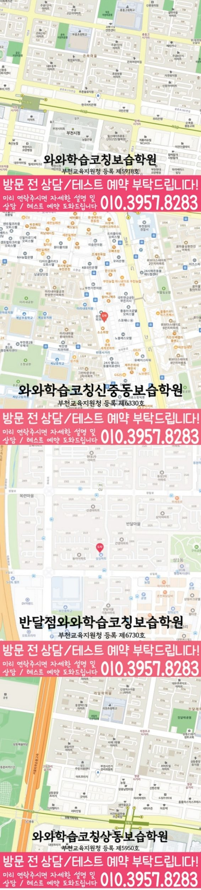

경기 · 중동점
약대동 고1 수학학원
- 수학 안내 학년
- 고1
- 방문 주소
- 경기 부천시 원미구 길주로 219 드림빌딩 401호
중동점(W+)의 수학 수강 안내입니다. 현재 모집 과정과 수업 시간표는 상담에서 확인해 주세요.
중동점(W+) 수학 수강 정보와 방문 안내
수학 수업 주소와 실제 학원
경기 부천시 원미구 길주로 219 드림빌딩 401호
중동점더블유플러스보습학원
중동점(W+) 주소로 지도 찾기학원 등록 정보
부천교육지원청 등록 제6516호
수학 수강 학년과 조건
중동점(W+)의 수학 안내 범위는 고1입니다.
현재 모집 과정과 수업 시간표는 상담에서 확인해 주세요.
운영 안내와 상담 시간
평일 오후 2시 30분 이후
주말 정규 수업은 운영하지 않습니다.
운영 안내와 학생별 수업 시간표는 다를 수 있습니다. 가능한 요일과 하교 시각을 함께 알려 주세요.
일반 지점과 방문 장소 구분
중동점 일반 지점의 주소는 경기 부천시 원미구 길주로 191 금영프라자 제 4층 401호입니다. 이 수학 안내의 대상인 중동점(W+) 주소와 구분해 주세요.
중동점 지점 전체 안내중동점(W+) 교습비 안내
중동점더블유플러스보습학원의 등록 과정입니다. 중동점 일반 지점의 게시표와 구분해 확인해 주세요.
게시표 기준일: · 중동점(W+) 교습비 게시표 원문
총 교습시간은 표시된 교습기간 전체의 시간입니다. 수업 1회의 시간이나 현재 모집 시간표와 구분해 확인해 주세요.
| 등록 과정 | 기간·교습시간 | 교습비 |
|---|---|---|
| 고등 수학 주1회 | 1개월 총 322.5분 | 75,000원 |
| 고등 수학 주2회 | 1개월 총 645분 | 150,000원 |
| 고등 수학 주3회 | 1개월 총 967.5분 | 225,000원 |
| 고등 수학 주4회 | 1개월 총 1290분 | 300,000원 |
| 고등 수학 주5회 | 1개월 총 1612.5분 | 375,000원 |
나머지 10개 등록 과정 보기
| 등록 과정 | 기간·교습시간 | 교습비 |
|---|---|---|
| 고등수학기초 주1회 | 1개월 총 107.5분 | 25,000원 |
| 고등수학기초 주2회 | 1개월 총 215분 | 50,000원 |
| 고등수학기초 주3회 | 1개월 총 322.5분 | 75,000원 |
| 고등수학기초 주4회 | 1개월 총 430분 | 100,000원 |
| 고등수학실력향상 주1회 | 1개월 총 430분 | 100,000원 |
| 고등수학기초 주5회 | 1개월 총 537.5분 | 125,000원 |
| 고등수학실력향상 주2회 | 1개월 총 860분 | 200,000원 |
| 고등수학실력향상 주3회 | 1개월 총 1290분 | 300,000원 |
| 고등수학실력향상 주4회 | 1개월 총 1720분 | 400,000원 |
| 고등수학실력향상 주5회 | 1개월 총 2150분 | 500,000원 |
특강·기초·실력향상 등은 별도로 기재된 과정입니다. 정규 수업 포함 여부와 추가 비용을 상담에서 확인해 주세요.
게시표의 등록 금액과 현재 적용 금액은 다를 수 있습니다. 신청 학년·과목·주당 횟수와 교재비·추가 프로그램을 포함한 총비용을 상담에서 확인해 주세요.
약대동 학교 자료와 상담 준비
학교 목록은 지역 상담에 참고할 정보입니다. 학교와의 제휴, 재원생 현황이나 특정 시험 대비반 운영을 뜻하지 않습니다.
고등학교 참고 목록
경기예술고등학교 · 중원고등학교 · 증흥고등학교
현재 배우는 수학 과목명과 교과서 단원, 최근 학교 평가 범위를 준비해 주세요. 직접 쓴 풀이에서 혼자 해결한 부분과 질문이 필요한 부분을 나눠 봅니다.
고1 수학 상담에 준비할 내용
약대동에서 중동점(W+) 수학 수강을 알아볼 때, 아래 자료로 학생에게 필요한 도움을 설명해 주세요.
학교 진도와 시작 단원
학교에서 사용하는 수학 교과서의 과목명과 현재 단원을 적어 주세요. 기본 예제에서 막힌 문제가 있다면 이전에 배운 개념과 계산 중 어느 부분에서 멈췄는지 표시합니다.
풀이 과정으로 질문 준비
틀린 문제 2~3개와 학생이 직접 쓴 풀이를 준비하세요. 문제 조건을 식으로 바꾸지 못했는지, 계산에서 틀렸는지, 답의 근거를 설명하기 어려운지 나누면 상담 질문이 구체적입니다.
수업 계획을 상담에서 확인
현재 단원의 복습과 다음 진도를 어떻게 배분할지, 숙제 확인과 오답 재풀이를 어떻게 진행할지 질문해 주세요. 정해진 교재·시간표·관리 방식은 해당 지점에서 확인합니다.
상담을 준비하는 방법입니다. 지점의 확정 교재나 수업 과정은 상담에서 확인해 주세요.
지도와 학습 안내 이미지

학습 안내 이미지 펼쳐보기

아래 이미지는 중동점 일반 지점의 위치 안내입니다. 수학 방문 주소는 경기 부천시 원미구 길주로 219 드림빌딩 401호입니다. 지도 찾기 링크에서 중동점(W+) 위치를 확인해 주세요.

원자료의 센터명과 주소를 기준으로 표시한 정보입니다. 방문 전에 주소, 입구와 이동 경로가 현재 안내와 같은지 확인해 주세요.
FAQ
약대동 고1 수학 자주 묻는 질문
고1 수학 수강 학년과 조건은 어떻게 되나요?
중동점(W+)의 수학 안내 범위는 고1입니다. 현재 모집 과정과 수업 시간표는 상담에서 확인해 주세요.
약대동 고등학교 참고 정보는 무엇인가요?
학교 참고 목록은 이 페이지의 학교 자료 섹션에서 확인하세요. 실제 배우는 단원과 평가 범위는 재학 학교의 자료를 기준으로 합니다.
약대동 센터 주소와 위치 안내는 어디에서 확인하나요?
중동점더블유플러스보습학원의 주소는 경기 부천시 원미구 길주로 219 드림빌딩 401호입니다. 중동점 일반 지점과 구분해 방문해 주세요.
약대동 교습비 정보는 어떻게 확인하나요?
중동점(W+)의 게시표 기준일과 수학 등록 과정을 이 페이지의 교습비 안내에서 확인할 수 있습니다. 교재비·추가 프로그램을 포함한 최종 비용과 적용 과정은 상담에서 확인해 주세요.
RELATED GUIDES
약대동 관련 학년·과목과 인근 지역
같은 지역의 다른 학년·과목과 가까운 지역 페이지를 구분해 연결했습니다.
실제 지점과 학년별 공부 안내
함께 읽는 교육정보
학습 안내를 읽었다면 공부 계획과 시험 준비도 함께 살펴보세요.
우리 아이의 공부 순서를 살펴보세요
지금 살펴본 학년과 과목의 공부 순서·확인 과제·수준별 연습 방법을 함께 읽어 보세요.
학습 예시와 지점의 개설 수업은 다를 수 있으므로 수강 조건도 함께 확인하세요.